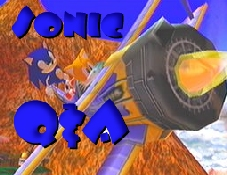

|  | Welcome to Sonic HQ's Q&A Page! Here, we'll answer all your questions about Sonic related stuff. Be it game, comics, cartoons, or anything else, we'll dig up the answers for you. Of course, don't ask stupid or rated R questions like "Why is Sonic naked?" or "How come Sally always walks around with her clothes open?" Also, don't type in CAPS when you write us, they'll be tossed to the trash right away. And as a final note, any flames will be laughed at, mocked, and thrown happily into my computers recycle bin. ^_^ Now finally, this page will be updated every week. Email your questions to here, and here only! Real Tails will be answering your questions. That is all.... Before submitting a question, please read our Sonic FAQ to see if it can provide you with an answer instead. |
Page News: August 14, 2001
Real Tails is now running this page, so be sure to send in your questions at sonicqa@hotmail.com!
10-04-01
|
Lots of Questions 1 of 4
1. On SA1, when you do the Trial section and select mini-game for Sonic, why does Sand Hill show up? Tails does it in the adventure, but Sonic doesn't.
2. How come in SA2 when Knuckles broke the Master Emerald the island didn't start shaking or moving?
3. How come there were only 6 Chaos Emeralds in STH1, but 7 in the ones after that?
4. Did Shadow die or did he survive using the Chaos Control or something when he fell at the end of SA2?
5. Is Tails and Dr. Eggman playable outside their robots anywhere else except Chao World?
6. Why is the hero story called "Farewell Sonic, Forever" in SA2?
7. Why does Shadow always have visions of Maria Robotnik?
8. Why aren't certain soundtracks (like the Dr. Eggman theme before the Egg Golem battles) not on the sound test?
9. Why is it that "It Doesn't Matter" and "Throw it all Away" the only themes in SA2 that are from beginning to end without repeating?
10. Why can't I play Chao Adventure 2 on SA2?
11. How come you can't save on Sonic and Knuckles, but you can on STH3 and Sonic and Knuckles collection?
12. How come Shadow can only walk very slowly and then starts skating after a while?
13. Is Gerald alive or dead by the time you get to Cannon's Core in SA2?
14. How do I get the 10 emblems for Chao World in SA2?
15. Is Chao Adventure 2 required for all 180 emblems?
16. What does SOAP stand for (the shoe company in City Escape)?
17. Does Sonic require the Light Shoes to get past Metal Harbor or can he do the Spin Dash Jump (Spin Dash then jump as you're rolling) to get past it?
18. Why does Amy always complain in SA2 when Sonic and Tails go on missions?
19. How come Shadow doesn't have his own Cannon's Core level in SA2?
20. Where is Big in Meteor Herd and Mad Space? (Be specific this time)
21. When will Sonic marry Amy?
22. How old exactly is Dr. Robotnik?
23. How old is Snively?
24. When will Archie start making Knuckles comics again?
25. Will they be making Sonic Adventure 3 or a Sonic version of Kirby Tilt and Tumble or something "good"?
1) Sonic Team thought Sonic needed another mini-game but couldn't fit Sand Hill into his game, I do believe at one point in the game however you can play Sand Hill with Sonic to get an emblem or something like that.
2) I'm not sure on that one, it may have, just we didn't see it. Vec Edit - The Floating Island doesn't appear in Sa2. Knuckles is first introduced in the desert after tracking down Rouge, who has stolen it. This isn't made particularly obvious in-game and at first I as well as many others thought that Knuckles' first cutscene took place on a rather continuity-breaking version of the Floating Island. ;)
3) Vec Edit - Most likely because of the increase in the number of zones and as a reference to the 7 Dragon Balls in Dragon Ball Z, since Super Sonic is a parody of that series.
4) SHQ believes he has died, but we'll have to wait for another Sonic game to come out to see. Vec Edit - Sonic Team might bring him back, but I doubt it. He's so similar to Sonic that it's hard to see how he could be useful without the "rival" storyline, and it doesn't look like SA3 will use a storyline like that because Rouge isn't Knuckles' rival any more.
5) No they are not.
6) Because Sonic "supposedly" dies in one of the scenes.
7) Because Maria is the one that helped raise him.
8) Just Sonic Team's way of making you play the entire game first.
9) Most of the other songs were too short to have them just end so Sonic Team had them loop to make them longer.
10) You need a VMU to get Chao Adventure 2, you need to load your chao into the VMU in a garden, you also need 128blocks of game space available on your VMU.
11) Vec Edit - Sonic & Knuckles isn't exactly a standalone game and it's meant primarily to lock on with S3 - the zones in S&K were all planned as part of S3 and then taken out. It apparently does contain some save memory, since it increases the number of save slots in S3&K, but this is used only in S3&K. Saving games in S&K alone wouldn't make much sense, because unlike saved games from S3, you couldn't really port them to S3&K well - you'd be starting in zone 7. ;)
12) It's his way of gaiing momentum. It also looks really cool. ;)
13) He's been dead for at least 25-50 years by the time you get to Cannon's Core.
14) You need to raise Chao and race them. You need to do every available race (Beginner, Jewel, Challenge, Hero, Dark) to get all 10 emblems.
15) Yes Chao Adventure 2 helps your Chao become stronger. Vec Edit - You don't necessarily need Chao Adventure 2 to make your chao powerful enough for most of the races, but from what I've heard, the last few races have opponents that are so powerful that you will probably need to build intelligence and luck through the VMU mini-games in order to beat them.
16) I'm not sure. Sorry.
17) The light shoes make it easier, somewhat.
18) Because she isn't included in most of the plans.
19) Vec Edit - Because when the other characters are playing Cannon's Core, Shdow wants the ARK to crash. He doesn't change his mind until afterwards.
20) I'm not sure, I've never seen them myself either. Vec Edit - I haven't seen them, but try checking the Big locations discussion on the South Island forum.
21) Vec Edit - Probably never. Amy is played as mostly an annoyance, although in SA2, Eggman refers to her as Sonic's girlfriend. Maybe Sonic Team is suggesting that Eggman knows what Sonic won't admit.
22) Probably between 36-46. Vec Edit - An exact age hasn't been given by Sonic Team or Sega as far as I know.
23) Around 26-30.
24) Probably never since they don't have the resources or the money.
25) Probably sometime in the future. Sonic Team isn't going to stop working on Sonic just yet, though the title may change.
- Ron Prower
|
|
Lots of Questions 2 of 4
1. Why is Dr. Robotnik's robots beaten by a small hedgehog every time?
2. Will there be something like Mario Brothers just with Sonic and Shadow or something off a 2-D Nintendo game?
3. If Gerald died way before Cannon's Core, then why are the TV's and stuff all activate with Gerald talking?
4. How old is Shadow and how old exactly is Tikal?
5. How many echidnas are known in the entire Sonic universe?
6. Why does the TV where Dr. Robotnik speaking about the Eclipse Cannon all over the Earth say in the background "Robotnik Empire", when it's really called "Eggman Empire"?
7. When will Sonic shows be on again in the mornings?
8. Why don't they just cut back on Sonic comics and do more Knux ones?
9. Is Sonic Sega's mascot, Sonic Team's mascot or both?
10. Since there weren't 7 emeralds in STH Super Sonic wasn't in there. Why did they make it up in STH2 instead another game later on to add a sequel to it?
11. What is the red ring thing that Sonic gives to Rouge right after you destroy the Finalhazard in SA2?
1) Because they aren't built well.
2) Maybe, we'll have to wait and see.
3) It was a pre-recorded message that was activated when Robotnik tried to use the cannon at full power.
4) It's never been said how old either is. Vec Edit - Actually, Tikal is 14 (well, physically).
5) I'm not sure, I haven't been keeping up with Archie's over flow of them.
6) Because that's Robotnik's real name and Sonic Team threw a bunch of other stuff in there too during that scene.
7) AoStH still airs, but the other 2 don't.
8) Vec Edit - By Sega's contract with Archie, Sonic has to be on every cover, so I doubt you'll see an issue that doesn't feature him fairly prominently, meaning that it's hard to put in an independent Knuckles story.
9) Both
10) Vec Edit - Well, apparently they thought of it during the production of Sonic 2.
11) Vec Edit - I believe it's Shadow's ring.
- Ron Prower
|
|
Lots of Questions 3 of 4
1. Why does some people say Sonic taught Tails how to fly when AoStH says Tails knows before he meets Sonic at all?
2. What is Dr. Robotnik's FULL name?
3. I've beaten Sonic Adventure with Sonic and haven't seen Sand Hill, but I also want to know why Twinkle Circuit is playable with everyone after one character.
4. In SA2, can Shadow get something like the Bounce Bracelet and Magic Gloves, Rouge get an Air Necklace, and Tails get Protection Armor?
5. Why did Shadow call Sonic "Blue Hedgehog" until he knew his name?
6. Why is Chaos first protector of Chao, and then an evil sea serpent or something?
7. In SA2 does Sonic Team think of Route 101 and 280 as Mini-Games/Sub-Games or real actual levels?
8. (I know you'll think I'm crazy) Will Archie ever start making Shadow comics?
9. Would Sonic be a good teammate for any other character in another VG universe?
10. Will Mighty and Shadow ever be teammates in their own game?
11. Why does Sonic confess he likes Sally but not over Amy?
12. How is Sonic so fast?
13. Who's truly faster at top speed: Sonic or Shadow?
14. Will Sonic Anime, Sat AM, and AoStH ever all come on in a TV marathon or something?
15. What channel and what times is AoStH on?
16. Why is Adventures of Sonic the Hedgehog known as AoStH?
17. How many quills do Sonic and Shadow have on their backs?
18. Who broke the Master Emerald in SA1?
19. In SA2, were there any levels took out/added before release date?
20. Which robots on AoStH consist of the Super Special Sonic Search Squad or whatever?
21. Does Dr. Robotnik and Sonic appear in Knuckles' Chaotix?
22. Which one's been in most games? Dr. Robotnik or Sonic?
23. Why in AoStH does Sonic and Tails dress up a lot? (I know they go into disguise, but sometimes they also do it for fun)
24. How many characters made a first appearance in Sonic Spinball?
25. What is Dr. Robotnik's worst invention or are they all bad?
1) Sonic did teach Tails how to fly even in AoStH.
2) Vec Edit - Sega - Dr. Ivo "Eggman" Robotnik, Archie - Dr. Julian Kintobor, Fleetway - Dr. Ovi Kintobor
3) Just something extra.
4) No they can't.
5) Because Sonic is a blue hedgehog.
6) Vec Edit - Chaos can become larger and more powerful by absorbing Chaos Emeralds. The Echidnas' attack enraged him and he became the angry boss seen in SA until he was tamed at the end.
7) Actual Levels.
8) Probably not.
9) Probably not since no one could keep up with him.
10) Sonic Team hasn't used Mighty in a long time so probably no.
11) Different universes.
12) I can't answer that.
13) Sonic
14) Not right now.
15) Toon Disney at 9AM EST on weekdays.
16) It's the acronym.
17) I don't know.
18) Vec Edit - Chaos, apparently.
19) Who knows, maybe.
20) Scratch and Grounder
21) Vec Edit - Yes. Eggman is the main villain (although Metal Sonic has probably his biggest role in Chaotix) and Sonic and Tails cameo.
22) Vec Edit - Sonic, due to his many cameos in other series. Robotnik did get 1 solo game, though, and I don't think Sonic has appeared as a playable character in any games without Eggman too, so Eggman may be up by 1 if you only count "Sonic" games. The only game with neither, as far as I know, is Tails' Adventure.
23) It's suppose to be a comdey show that's why.
24) Vec Edit - See the Game Info page for first appearances in all games.
25) All Bad
- Ron Prower
|
|
Lots of Questions 4 of 4
1. Does Sonic's shoes give him the speed or was he just born that way?
2. When will Tails become as fast as Sonic or will he?
3. Is Knuckles in more games than Tails or is it the other way around?
4. In Sonic Adventure 2 I'm having a lot of trouble on Biolizard. I've beat him but it doesn't make it easier.
5. Was Coconuts in the Super Special Sonic Smash Search Squad or whatever?
6. Was Casinopolis in SA1 inspired by Casino Night in STH2?
7. Who's the fat brown echidna in SA1 who leads where they are?
8. When will Knuckles' theme songs quit being non-understandable?
9. Will they make a game with Super Sonic and Hyper Shadow in them both and control them start to end?
10. Will they make a Sonic version of Paper Mario?
11. Will they make Shadow dolls?
12. How many different Sonic toys are there?
13. How many Sonic comics are there?
14. If Sonic Team was making another Sonic game besides advance and gamecube sa2, what would it probably be like?
15. Since Shadow calls Sonic "Blue Hedgehog", why doesn't Sonic call Shadow "Black Hedgehog"?
16. In all of Knuckles sa2 stages, why do they all have lyrics?
17. In SA2, why does Sonic get 2 power ups Shadow doesn't, and when all of the powers have been collected, Shadow has no powers that Sonic doesn't, and Sonic has 2 more?
18. Why are power ups named different (like Jet Engine/Booster, Air Shoes/Light Shoes)
19. In sa2 how do the Lost Chao get to where they are?
20. When will there be a Sonic game that has RPG battles?
1) He was born that way.
2) Tails won't.
3) There are more games with Tails.
4) You're going to have to be more specific.
5) No he wasn't.
6) Probably, since it's the same theme.
7) I'm not sure, I didn't see a fat brown Echidna in the game.
8) That's up to Sonic Team.
9) No since they would have to put Hyper Sonic in there too.
10) Hopefully not.
11) I believe they are already out in Japan.
12) I don't know, too many to count.
13) 2 just Fleetway and Archie.
14) A sequal to Sonic Adventure 2 probably.
15) Because OSnic is different than Shadow.
16) That's just the way Sonic Team did them, I'm not sure why.
17) Because Sonic is the main character so he always gets more.
18) Different names for different characters.
19) Chao explore a lot and tend to get stuck, that's why.
20) Probably not an official one though there are some fan ones.
- Ron Prower
|
|

hits since Apr 13, 1999.
FastCounter by LinkExchange
| All Sonic and related characters are trademarks of Service and Games Enterprise. All questions are answered by Sonic HQ...duh... |